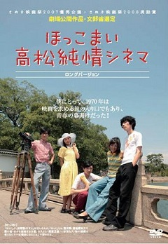

高嶋 弘(たかしま ひろし)
高松高校 昭和48年卒
プロフィール
昭和４８年高松高校卒業
早稲田大学法学部卒業後、日本映画学校（当時の横浜放送映画専門学校）で映画を学ぶ。
プロダクション群狼（柳町光男監督）を経て、フリー演出業。
ＰＲビデオを中心に、ＴＶ番組、ＣＤ－ＲＯＭ、ＤＶＤ作品などを幅広く構成・演出。
1993年 吉田喜重監督の小津安二郎監督を描くドキュメンタリー作品「小津さんの映画」（ＮＨＫプライム10、ＥＴＶ特集）に助監督として参加。
その後、日本に初めて来たフランス人カメラマン、ガブリエル・ベールを描くドキュメンタリー作品「映画の夢、東京の夢」（吉田喜重監督 ＭＸＴＶ開局記念番組）に編集として参加。
映画「ほっこまい 高松純情シネマ」

「さぬき映画祭2007」にて「ほっこまい 高松純情シネマ」が優秀企画賞に選ばれる。2008年 「さぬき映画祭2008」にて上映、奨励賞を受賞。
高松、岡山、東京で上映後、DVD発売。
TUTAYAなどでレンタル中。
京都での大学生活を描く続編も構想。
「ほっこまい 高松純情シネマ」オフィシャル・ブログ http://hokkomai.ashita-sanuki.jp/
TSUTAYAで購入・レンタルする場合はこちらで。
http://www.tsutaya.co.jp/works/60000216.html
TSUTAYAの宅配レンタルはこちらで。
http://www.discas.net/netdvd/goodsDetail.do?pT=0&titleID=1196720954#